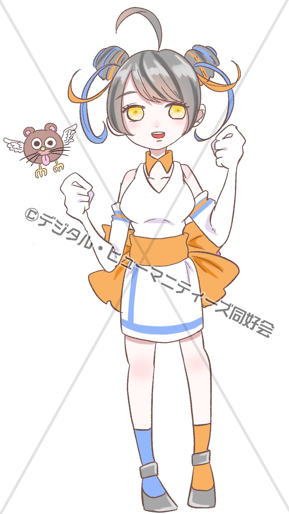
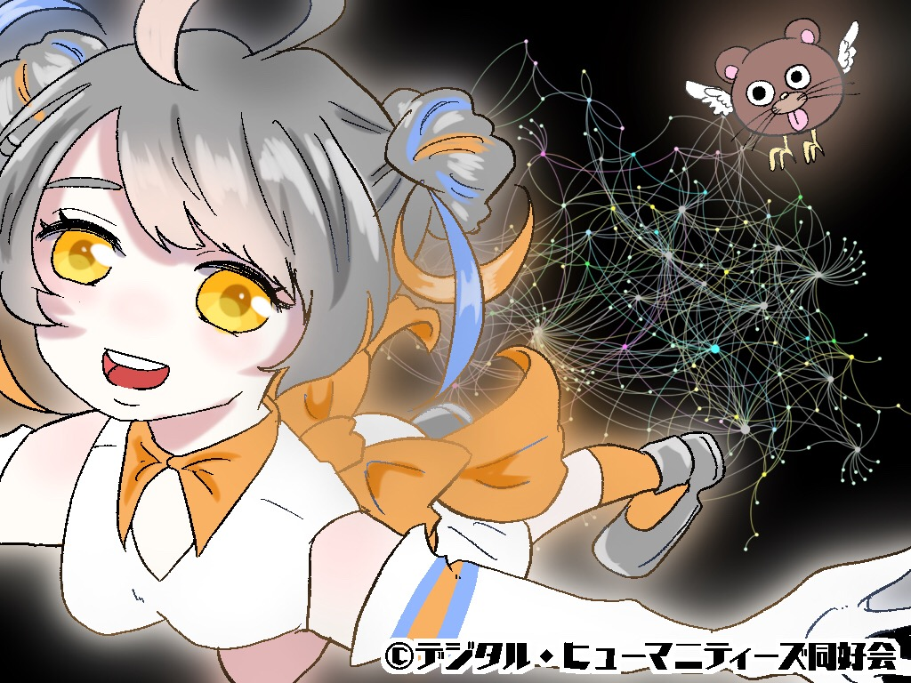

デジタル・ヒューマニティーズ同好会（デジもんず）のページ
 
デジタル・ヒューマニティーズ同好会 公式イメージキャラクター
亞互羅じも子（あごら・じもこ） & 鳥田（とりだ）
作画: 兎佐きみの
デジタル・ヒューマニティーズ同好会（デジもんず）は，
デジタル・ヒューマニティーズ（人文情報学）の勉強・自由研究を
自主的に行う市民有志の集まりです．
デジもんずは，サイエンスアゴラ2019に採択されています．（ブース番号315）
[ご注意下さい]
デジもんずは，研究者団体ではありません．
「日本デジタル・ヒューマニティーズ学会(JADH)」や
「じんもんこん(SIGCH)」といった,
正式な学会・団体とは，一切関係ありません.
デジもんずの発信する知識や研究成果も，正確とは限りません．
ある人がこれらの発信内容を信頼し利用することによって不利益を被っても，
デジもんずはその人に対して，一切の責任をもつことができません．
ご理解の程お願い申し上げます．
メイン画面に戻る
サイエンスアゴラ公式ホームページ
サイエンスアゴラ2019でのデジもんず紹介ページ